Crea una máquina virtual en VirtualBox Workstation que nos sirva
para instalar el sistema operativo Windows 7. ¿Qué requerimientos
mínimos necesita Windows 7? ¿Qué características tiene la máquina
creada? Llama a tu máquina W7-SI. La tarjeta de red funcionará en
modo NAT en principio.
Requerimientos minimos de Windows 7:
Procesador de 1GHz 32bit o 64bit
1GB ram para 32bit y 2GB 64bit
16GB espacio para 32bit y 20GB para 64bit
Graficos DirectX 9 con WDDM 1.0
Creacion de la VM:
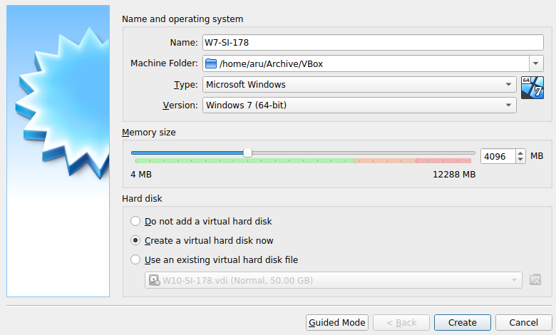
Y ya solo queda meter la ISO y dejar que instale.
Carga la ISO de instalación de Windows 10 en la unidad de CD e
instala dicho sistema operativo en la máquina virtual creada. Llama
la máquina W10-SI-XX donde XX es tu rango de IP asignadas.
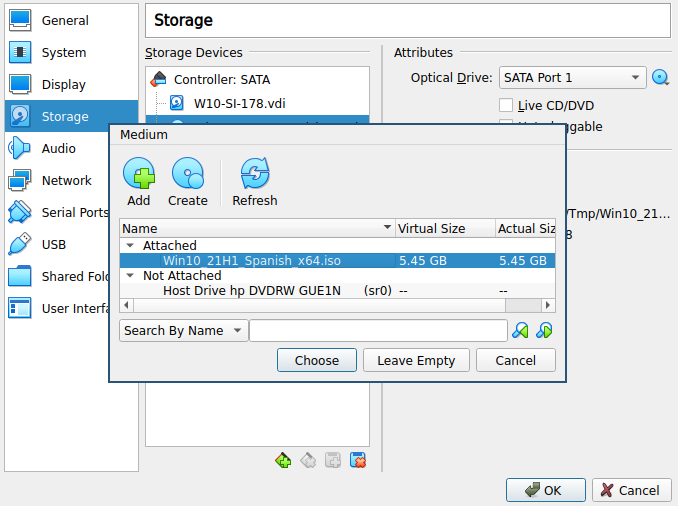
Y luego solo es seguir los pasos de instalacion y dejar que,
despues de media hora, acabe de instalarse.
Instala VMWTools en la máquina virtual.
(Cuando intento hacer una captura el $!#*#$& menu contextual se
cierra, asi que te explico que hay que pinchar)
Pinchando en Devices, al final tenemos una opcion de insertar el CD
con las guest additions, le pinchas y aparecera que windows ha
encontrado una nueva unidad.
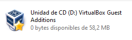
Ahora le hacemos doble click a la unidad.
Aceptamos y le damos a next hasta que deje de preguntar.
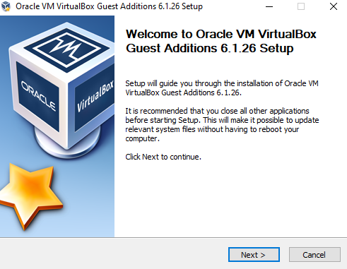
Una vez acabe tocara reiniciar la VM.
Comprueba que ahora podemos copiar un fichero simplemente cogiendo
un fichero del anfitrión y soltándolo dentro del huésped.
(Ya que en el host no tengo un File Manager grafico, pruebo con el
portapapeles).
Funciona, demostracion copiando del host un textaco y pegandolo en
el guest:
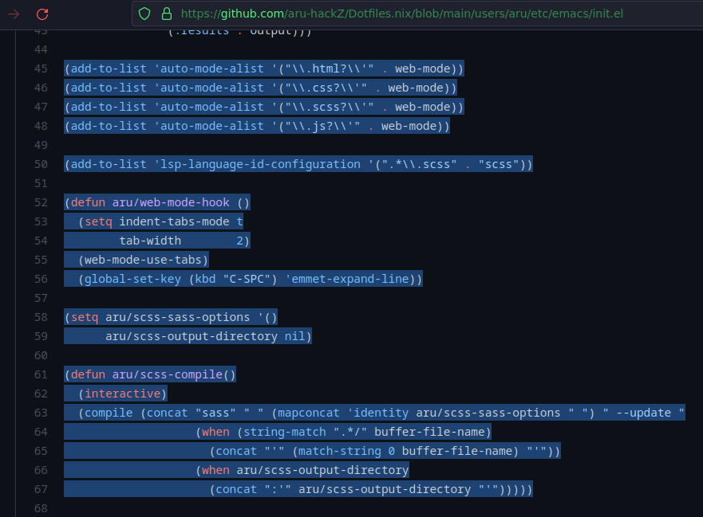
Crea una carpeta compartida entre la máquina virtual y la
anfitriona de sólo lectura. Haz que salga conectada en la virtual
como una unidad de red. Comprueba que funciona.
Creamos una carpeta compartida.
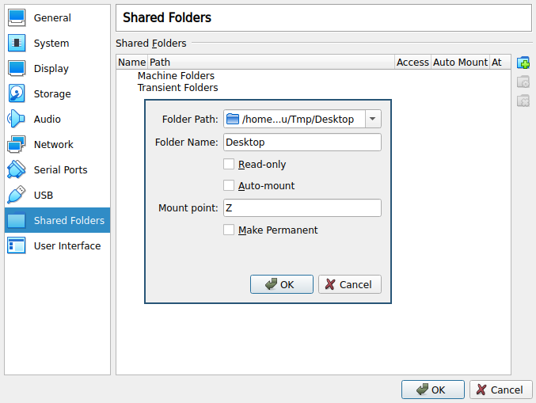
Abrimos el explorador de archivos y deberia aparecer una unidad de
red con la carpeta anteriormente especificada
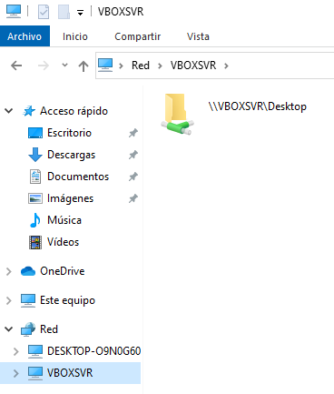
Explica las diferencias que hay entre los tres modos en los que
puede trabajar la tarjeta de red virtual.
Modo NAT: El guest se conecta a lo que podriamos llamar un router
virtual cuya puerta de enlace es el host, y nos conectamos por
defecto a este router mediant DHCP. Este tipo de configuracion, si
el host esta conectado a internet, nos permite que el guest tambien
sea capaz de conectarse a internet sin rompernos la cabeza.
Modo Bridge: El guest se conecta mediante un switch virtual
directamente a la red a la que el host esta conectado, con lo que
puede interactuar con esta de forma directa. Si la red usa DHCP la
conexion es tan simple como no tocar nada, sino tocaria configurar.
Modo Host-Only: En este modo el guest se conecta con el host y con
nada mas, es decir que no puede salir a la red del host o internet.
En modo NAT.
Observa qué configuración IP tiene la máquina virtual en la línea
de comandos con el comando ipconfig /all
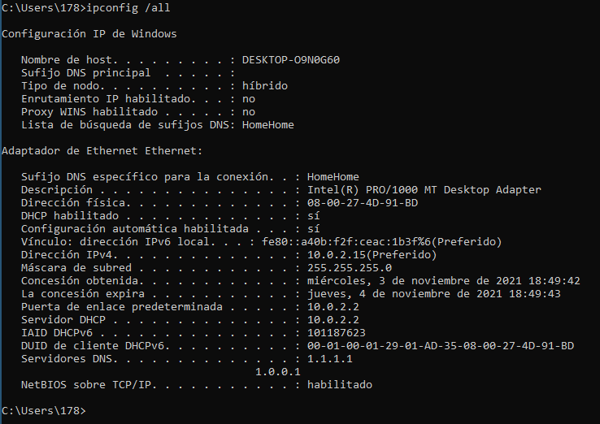
¿Qué dirección IP, de DNS y de Puerta de enlace tenemos? ¿Quién
lo ha asignado?
Ha sido asignada mediante DHCP segun la configuracion del
adaptador virtual, que en este caso es algo parecido a esto:
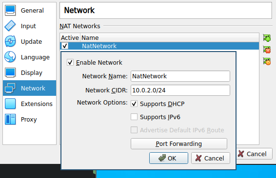
Comprueba que funciona un PING a www.google.es
Google es malvado
Comprueba si funciona un PING a una IP de un ordenador físico del
aula.
Como explico mas abajo en el ejercicio 9, le hare ping a un
dispositivo de la red de mi casa, en este caso mi movil.
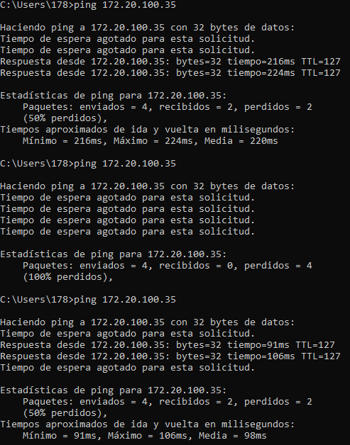
La VM peta tanto que ni ping hace a veces.
En modo Host Only de la tarjeta de red
Observa qué configuración IP tiene la máquina virtual en la línea
de comandos con el comando ipconfig /all
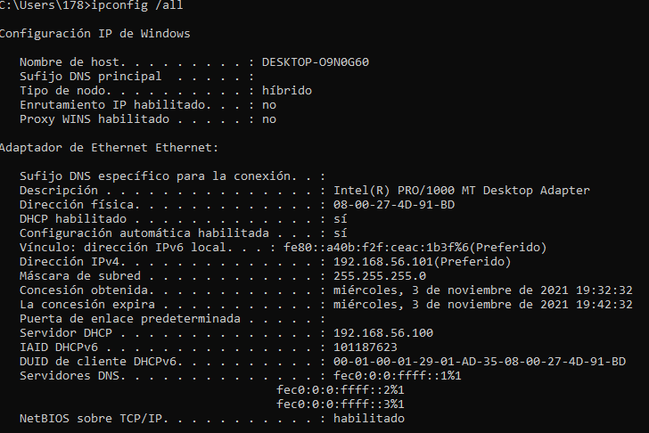
¿Qué dirección IP, de DNS y de Puerta de enlace tenemos? ¿Quién
lo ha asignado?
Ha sido asignada mediante DHCP segun la configuracion del
adaptador virtual, que en este caso es parecida al ejemplo
anterior pero con una diferente red (192.168.56.0) y sin puerta
de enlace.
Comprueba que funciona un PING a www.google.es
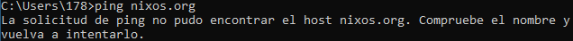
Obviamente no se puede, ya que al no haber configurado puerta de
enlace no hay salido al exterior, como vivir en una cueva.
Comprueba si funciona un PING a una IP de un ordenador físico del
aula
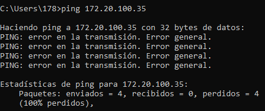
Lo mismo de antes.
En modo Bridged de la tarjeta de red.
Daremos la siguinte configuracion de red a la maquina:
IP: XX.XX.XXX.10 donde XXX será el byte asignado para tus redes
Máscara: 255.255.0.0
Puerta de enlace: XX.XX.0.254
DNS primario: 8.8.8.8
Ya que uso portatil y en clase no podemos conectarnos a la red
local por falta de rosetas, lo hare desde mi case haciendo ping a
mi movil, por ejemplo. Notese, que tengo en mi casa la red
configurada usando la ip 172.20.0.0.
Tras abrir tropecientos menus contextuales cambie la
configuracion de la red:
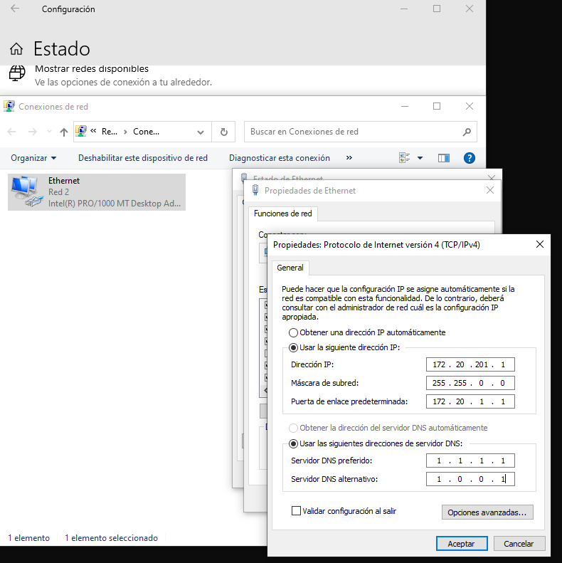
Comprueba que funciona un PING a www.google.es
Comprueba si funciona un PING a una IP de un ordenador físico del
aula
Lo dicho, esto va muy petado.
¿Qué conclusiones sacas sobre los tres modos distintos en los que
puede trabajar una tarjeta de red virtual?
Lo mas habitual es usar el NAT, que viene por defecto, a menos de
que se tenga la necesidad de comunicarse con la VM por algun
protocolo de red, para lo cual seria mas facil usar el modo Bridge
a menos que quieras estar toqueteando el port forwarding del
NAT. Y por ultimo en los casos de no tener la necesidad de acceder
a terceros o que estos accedan a la VM se usaria el Host-Only.
¿Qué es un Snapshot?
Una Snapshot es un punto de guardado del estado de la maquina, al
cual siempre podemos regresar si, por ejemplo, nos la hemos
cargado.
Realiza un Snapshot.
Pinchamos en Machine y dentro Take Snapshot.
Le damos un nombre y descricion y aceptamos.
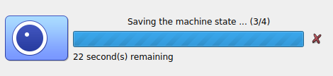
Realiza algún cambio apreciable dentro de la máquina virtual.
Voy a cambiar el nombre del equipo
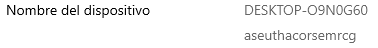
Vuelve al Snapshot creado en el punto 12.
Nos vamos a la vista de snapshots
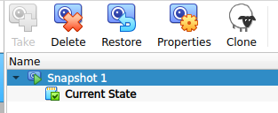
Y pinchamos en la snapshot1 y damos en restaurar. Si arrancamos la
maquina y comprobamos el nombre del equipo ha vuelto a la
normalidad.